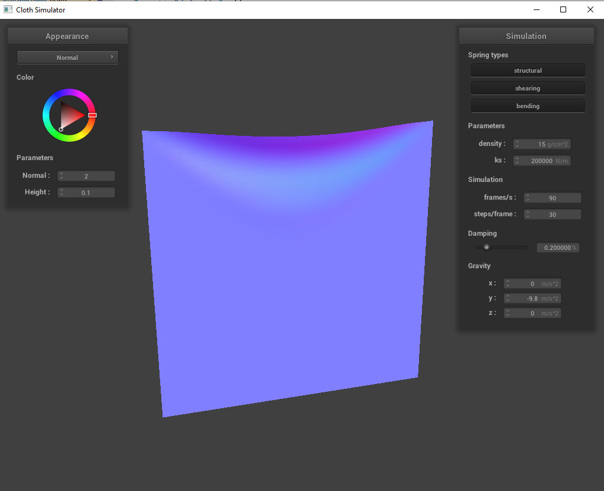
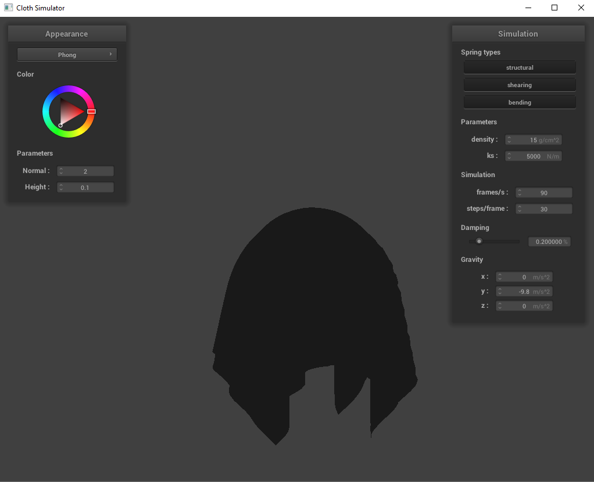

Overview:
This project outlined the basics of the simulation of a physical object, showing how an object like the cloth can be modeled as a bunch of connected components and modeling its
behavior using models from the physical world.
Task 1:
To initialize all the point masses, we do two for loops through the num_height_points and the num_width_points, with the space between the point masses
being width / (num_width_points - 1) on the x axis, and height / (num_height_points - 1) on either the y axis or the z axis depending on the starting orientation.
Simultaneously, we use find() from the
pinned2
pinned2 without shearing springs
pinned2 with only shearing
All constraints
Task 2:
To begin with, every point mass is iterated through, resetting its forces vector to 0. Then, we multiply every acceleration from the list of external accelerations
with the point mass's mass, adding that to the point mass's forces vector, giving the combined external forces on the point mass. The spring forces are added by
iterating through all the springs and applying the spring equations if that type of spring is enabled. Verlet integration is implemented straightforwardly, iterating
through all point masses again and applying the appropriate equations and plugging in values. After moving the point masses with Verlet integration, the changes are
constrained by checking if the length of each spring is greater than 1.1 * its rest length. If it is, we shift the two point masses closer together by a magnitude of
(length - spring.rest_length * 1.1) along the direction between the two masses, equally distributed between the two point masses unless one of them is pinned, in which case
the unpinned mass is the only one moved, moving the entire magnitude.
With low spring constants, the cloth appears "thinner" and more loose. In contrast, high spring constants result in the cloth appearing very stiff. Of note, with very high spring constants, the cloth started becoming glitchy, pulling in on itself and clipping around everywhere.
lowk k
high k
Changing density makes inverse changes compared to changing the spring constant. High density makes a flowier cloth, while low density makes it appear stiffer.
High density
Low density
With low damping, the cloth stays constantly in motion, taking a long time to slow down. With high damping, the cloth moves very slowly, resembling a cloth that was submerged in water. (no pictures included here since the dampening parameter largely affected how the material appeared in motion.)
pinned4
pinned4 wires
Task 3:
To test whether the point mass lies within the sphere, we check if the distance between the origin and the point mass is less than the radius of the sphere. If it is,
we calculate the tangent point as the point mass's position plus a move in the direction from the origin to the point mass with a magnitude of the difference between the radius
and the length. Then, we do a similar calculation for the new position, except adding a correction term to the point mass's last position, where the correction term is
similar to the tangent position calculation, however using the tangent point and the last position as its point, scaled by a factor determined by the friction.
To test if the point's new position is crossing the plane, we check if the dot product between the current position and the normal vector of the plane, as well as the dot
product between the last position and the normal vector of the plane, and if they are opposite signs, we know the point mass is moving through the plane, which we want to avoid.
To fix this, we set the tangent point in a similar way to the sphere, except with the given normal of the plane, as well as an extra SURFACE_OFFSET value to add to the length and subtract
from the point mass's position. The rest plays out similarly to the sphere as well, except the surface_offset propagates and tries to insure that the point does not cross the plane.
Sphere ks = 5000
Sphere ks = 500
Sphere ks = 50000
The higher spring constant doesn't wrap around the sphere as much, laying stiffly over. The lower spring constantly wraps more around the sphere than the 5000 ks model.
Cloth at rest on plane
Task 4:
Task 4 was probably the most involved portion of the project. To begin with, we needed to implement the hash_position function, which takes in a position vector and
assigns that position to the bounding boxes with dimensions w, h, and t, as outlined in the project spec. To assign to these boxes, I simply rounded each x, y, and z coordinate
down to correspond to assign them to the corresponding box. Then, the return value of this function is a unique float, which effectively acts as a hash for the position corresponding
to what bounding box it belongs into. What I used for the return value followed from intuition from pointer arithmetic while iterating through a 2d array that's stored as a 1d array.
I return the rounded x value, plus the rounded y value * num_width_points / 3, plus the rounded z value * num_width_points * num_height_points / 9. This should uniquely assign each
position to its appropriate box.
Next, the build_spatial_map() uses the hash_position() function to create a key for each point mass and assigns it to a vector storing point masses associated with that key (and as a
consequence, with that box volume.)
The final function self_collide checks the vector of point masses that the input point mass is mapped to with its hash_position, iterating through and adding up movements to nudge
the input point mass away from every other point mass it's too close to.
Finally, in the simulate function, once we do Verlet integration to change the positions of the point masses, we call build_spatial_map() and then check for self_collide on every point mass.
Cloth falling
String constant of 500, appears flimsier and "thinner"
String constant of 50000, appears very taut, folds similar to paper
Density of 1, appears similar to the string constant of 50000
Density of 150, appears similar to the string constant of 500
Task 5:
Task 5 was mostly just getting acquainted with the GLSL language. The implementations itself were mostly just plugging in the equation provided in the spec or in previous lectures.
The most important things to note were to convert from vec4 to vec3 and vice versa, as well as normalizing vectors that were being used in dot products to calculate angles.
Shader programs are programs designed to be run on the GPU in parallel to greatly speed up lighting simulation. In this case, the vertex shaders and fragment shaders work together by
having the vertex shader define geometrical properties of the vertices and interpolating across them, and then having the fragment shaders access that information to determine the colors
to be output by the associated pixels.
The Blinn-Phong shading model is essentially just adding 3 different shading models together independently. Diffuse shading, which is appearance of a point on an object that stays the same
regardless of viewing angle, specular shading, which simulates lighting that is brighter near directions that the surface is mirroring the incoming light, and ambient lighting, which is constant
lighting added to the entire object uniformly.
Ambient component
Diffuse component
Specular component
Total
Custom texture
Bump mapping
Displacement mapping
We can see that bump mapping emulates depth through different lighting to match with the heightmap of the texture, but displacement mapping actually reshaping of the model. It seemed like both shaders reacted similarly to increasing of the coarseness in terms of reacting to the sphere, but the coarse nature of the texture was definitely more noticeable on the displacement map.
Mirror Sphere
Mirror Cloth
https://cal-cs184-student.github.io/sp22-project-webpages-ReplicaC/proj4/index.html